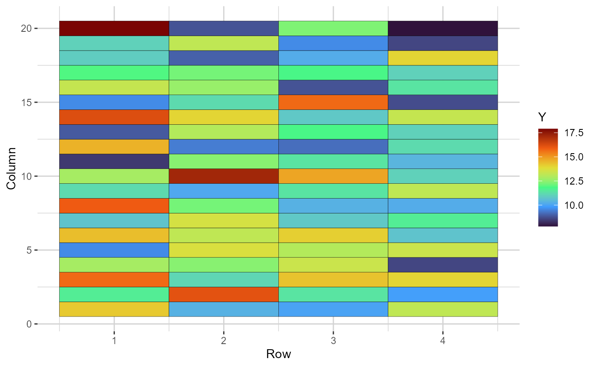
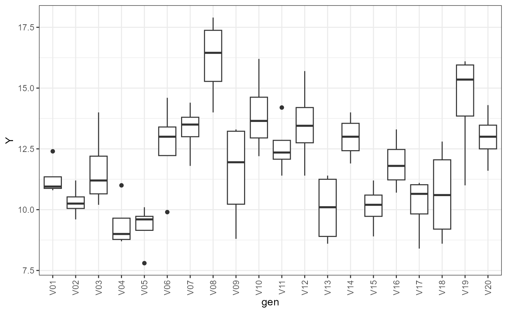
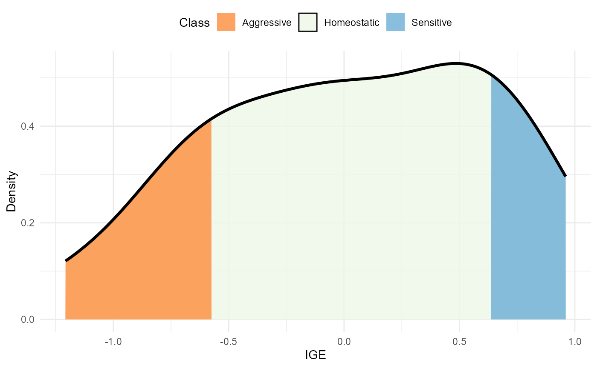
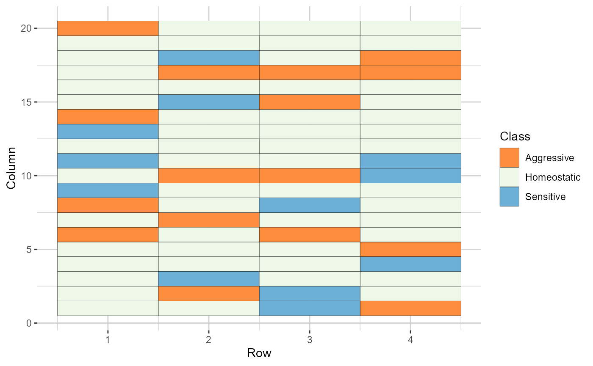
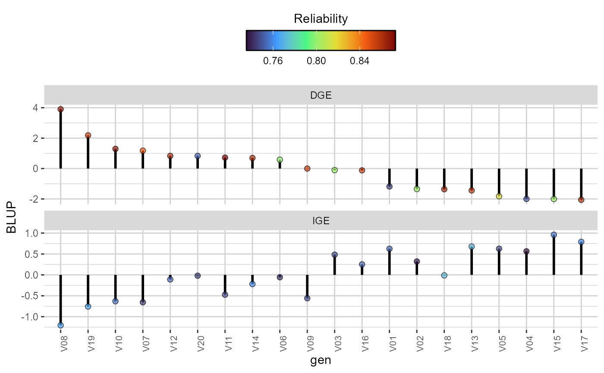
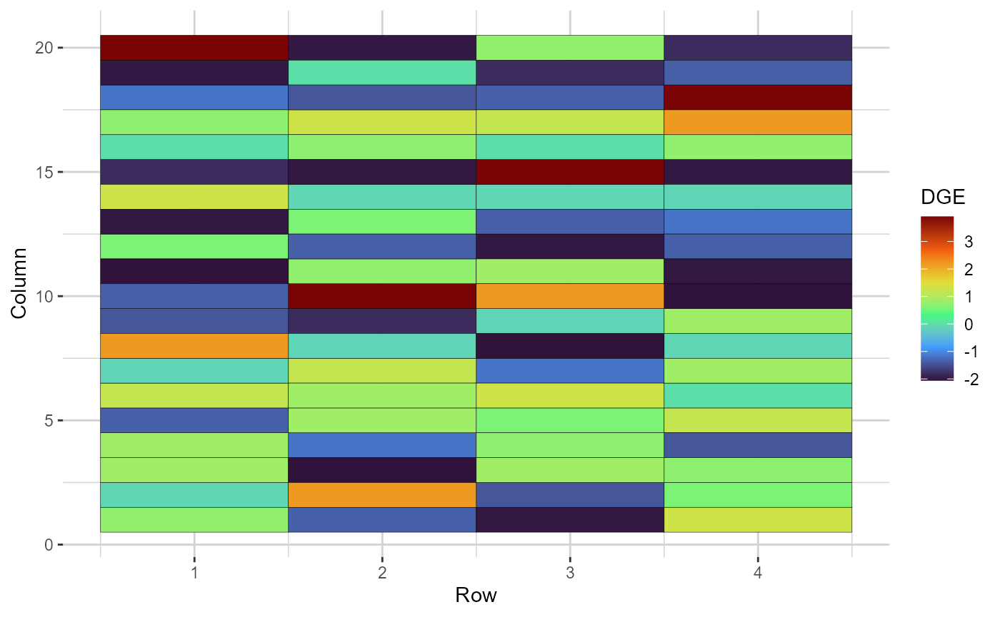
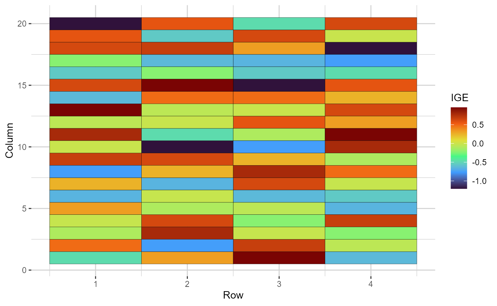
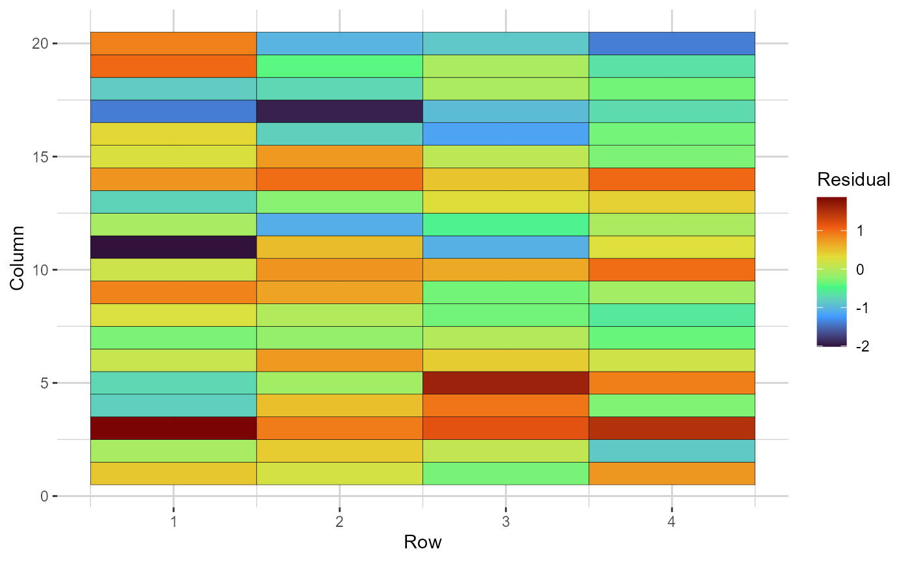

vignettes/crop_competition.rmd
crop_competition.rmdThis vignette describes the complete workflow for considering genetic
competition in crop breeding trials using gencomp. More
details about the theory underlying gencomp can be found at
Stringer, Cullis, and Thompson (2011) and
Chaves et al. (2025).
To begin, load gencomp using the code below. Note that
gencomp has a strong dependency on asreml,
which is a package that is not freely available. Thus, it is vital that
asreml is installed. The ggplot2 (Wickham 2016) library will also be loaded for
customizing the plots. This is not mandatory.
gencomp has two available datasets. The representative
for crop breeding is called potato, obtained from the
package agridat Wright
(2024). Originally, this dataset was generated by Connolly et al. (1993) to study the inter-plot
competition in single-drill plot trials of potatoes in Scotland. They
measured the tuber yield of 20 varieties (column gen),
which were replicated four times (column rep). Each
replication was an independent row of 20 drills. The maturity class of
each variety was also registered (column matur), with
representatives of the first early (M1), second early (M2) and maincrop
(M3) classes. Each drill had five tubers spaced 45 cm apart, with 75 cm
between drills. The rows (replications) are not contiguous, which
impedes the usage of an autocorrelation structure in the residual part
of the model. Thus, in this case, we fitted a genetic-competition model
considering the within-row competition.
| rep | gen | row | col | yield | matur |
|---|---|---|---|---|---|
| R1 | V10 | 4 | 1 | 13.2 | M3 |
| R1 | V06 | 4 | 2 | 9.9 | M1 |
| R1 | V14 | 4 | 3 | 14.0 | M3 |
| R1 | V13 | 4 | 4 | 8.6 | M3 |
| R1 | V07 | 4 | 5 | 13.4 | M3 |
| R1 | V09 | 4 | 6 | 10.7 | M3 |
The competition matrix (or incidence matrix of competition effects),
henceforth depicted as
is indispensable for the analysis. In the case of crop breeding,
will be an incidence matrix with ones in the positions corresponding to
the genotypes neighboring a given plot in the horizontal or vertical
directions, and zero elsewhere Stringer, Cullis,
and Thompson (2011). To build the
,
gencomp has the function prepcrop. Here is how
to use it employing the example dataset:
comp_mat = prepcrop(
data = potato,
gen = "gen",
row = "row",
col = "col",
plt = NULL,
effs = c("rep", 'matur'),
trait = "yield",
direction = "row",
verbose = TRUE
)data is the working dataset. gen,
row, col, and trait are the
column names in the dataset that contain the information of genotypes,
row, column, and trait, respectively. The plt argument is
optional (defaulting to NULL) and allows users to specify
the name of the column containing plot information. This helps ensure
that the functions follow the same order as the data collection in the
field. If plt is not provided, the function will
automatically generate a column to differentiate the plots, ordering the
dataset by row and column. The effs argument accepts a
string vector with the names of columns representing other effects to be
considered in the model fitting step. For instance, the effect of block
(rep) and maturity stage (matur).
direction defines which direction will be considered (row
column) for constructing the competition matrix. Finally,
verbose controls whether a progress bar is printed in the
console or not.
The prepcrop function generates a list of class
comprepcrop. This list has three elements:
| V01 | V02 | V03 | V04 | V05 | gen | row | col | yield | matur |
|---|---|---|---|---|---|---|---|---|---|
| 0 | 0 | 1 | 0 | 0 | V11 | 1 | 1 | 14.2 | M3 |
| 0 | 0 | 0 | 0 | 0 | V03 | 1 | 2 | 11.6 | M1 |
| 0 | 0 | 1 | 0 | 0 | V12 | 1 | 3 | 15.7 | M3 |
| 0 | 1 | 0 | 0 | 0 | V20 | 1 | 4 | 12.8 | M2 |
| 0 | 0 | 0 | 0 | 0 | V02 | 1 | 5 | 9.6 | M1 |
head(comp_mat$neigh_check) | gen | row | col | y_focal | y_row |
|---|---|---|---|---|
| V11 | 1 | 1 | 14.2 | 11.60 |
| V03 | 1 | 2 | 11.6 | 14.95 |
| V12 | 1 | 3 | 15.7 | 12.20 |
| V20 | 1 | 4 | 12.8 | 12.65 |
| V02 | 1 | 5 | 9.6 | 13.60 |
| V07 | 1 | 6 | 14.4 | 10.15 |
comp_mat$Z[1:5, 1:5]| V01 | V02 | V03 | V04 | V05 |
|---|---|---|---|---|
| 0 | 0 | 1 | 0 | 0 |
| 0 | 0 | 0 | 0 | 0 |
| 0 | 0 | 1 | 0 | 0 |
| 0 | 1 | 0 | 0 | 0 |
| 0 | 0 | 0 | 0 | 0 |
comprepcrop objects are compatible with the S3 method
plot, which can be used to generate a heatmap illustrating
the field trial, and box-plots with each candidate’s performance.
plot(comp_mat, category = "heatmap")
Heatmap representing the grid, in which the cells are filled according to the phenotype value of each plot (blank cells are missing values)
plot(comp_mat, category = "boxplot")
Boxplots depicting the phenotypic performance (y-axis) of each selection candidate (x-axis).
The summary(comprepfor) function returns the number of
phenotypic records, number of selection candidates, number of rows and
columns, and the direction that is being considered.
summary(comp_mat)
#> yield gen row col direction
#> 1 80 20 4 20 rowA general spatial-genetic competition model can be represented by:
where
is the vector of phenotypic records,
is the vector of fixed effects,
is the vector of direct genetic effects (DGE),
is the vector of indirect genetic effects (IGE),
is the vector of other random effects, and
is the vector of spatially correlated errors.
is the incidence matrix of the fixed effects,
is the DGE incidence matrix,
is the IGE incidence matrix (built using prepfor), and
is the design matrix of other random effects. The dimensions of
are the same as
.
The spatially correlated errors are distributed as
,
where
is the spatially correlated residual variance,
and
are the first-order autoregressive correlation matrices in the column
and row directions, and
is the Kronecker product. Note that spatial modelling is not possible in
the example dataset, so
,
i.e., a genetic competition model (without the spatial component) is
being fitted. If cor = TRUE (default, see below), the
function will fit a model in which
and
are correlated outcomes of the genotypic effects decomposition. They
both follow a Gaussian distribution, with mean centred in zero, and
covariance given by:
where is the DGE variance, is the IGE variance, and is the covariance between DGE and IGE. An alternative parametrization considers that and are independent. If this is not true for the trait and/or population under investigation, assuming independence will add bias to the results.
The function that fits the genetic-competition linear mixed model
uses the average information algorithm implemented in the
asreml package (The VSNi Team
2023). Check the function’s structure using the example
dataset:
model = asr(
prep.out = comp_mat,
fixed = yield ~ rep + matur,
random = ~ 1,
lrtest = TRUE,
spatial = FALSE,
cor = TRUE
)prep.out is a comprepcrop object.
fixed is a formula, declared just like is usually done for
regular asreml models. random is also a
formula, but this argument should just be altered if other random
effects than the genotypic effects should be considered in the model.
This is because all pre-programmed models already consider DGE and IGE,
as previously described. lrtest defines if hypothesis tests
using likelihood ratio tests should be done. spatial
determines if a regular genetic competition model
(spatial = FALSE) or a spatial-genetic competition model
(spatial = TRUE) should be fitted. Finally,
cor dictates if the function will fit a model considering
the covariance between DGE and IGE (cor = TRUE) or not
(cor = FALSE). asr can receive other arguments
passed on to the asreml function (see ?asreml
for more information). The output of the asr function is an
object of classes asreml and compmod. Since it
holds the asreml class, it is suitable for using with S3
methods like plot, summary,
predict, update, resid and others
(see help("asreml.object")).
The function to obtain the main results from the compmod
object is called resp, and its structure is exemplified
below using the example dataset:
res = resp(
prep.out = comp_mat,
model = model,
weight.tgv = FALSE,
sd.class = 1
)model is the compmod object obtained from
the asr function. weight.tgv receives a
logical value, and determines if the reliability should be used as
weight to compute the total genotypic value (TGV) or not.
sd.class is a weight to multiply the standard deviation of
competition effects when determining the competition classes (defaults
to 1). The resp function returns an object (list) of
classes comresp and comprepcrop. This object
is compatible with the S3 methods plot, print
and summary. A detailed description of the results within
the list generated by res is provided below.
The data frame with the variance components will yield different
results depending on the model. cor(IGE_DGE), which
represents the correlation between DGE and IGE; DGE and
IGE will always be present in variance component obtained
from compmod objects. The residuals will have different
forms depending if spatial is TRUE or
FALSE in the asr function.
res$varcomp| component | std.error | z.ratio | bound | %ch | |
|---|---|---|---|---|---|
| cor(IGE_DGE) | -0.8012 | 0.1791 | -4.4744 | U | 0.3 |
| DGE | 2.9292 | 1.1294 | 2.5936 | P | 0.3 |
| IGE | 0.4616 | 0.2108 | 2.1898 | P | 0.0 |
| R | 0.9875 | 0.2266 | 4.3579 | P | 0.0 |
Available only if lrt = TRUE in the asr
function.
res$lrt| effect | LR-statistic | Pr(Chisq) |
|---|---|---|
| DGE | 41.62410 | 0.00e+00 |
| IGE | 14.98519 | 5.42e-05 |
Available if cor = TRUE in the function
asr. Contain the DGE heritability and total heritability
Bijma, Muir, and Van Arendonk (2007). The
first is the portion of the total variance that refers to the DGE. The
latter is a ratio between the sum of the total heritable components
against the phenotypic variance, and it is an adjusted estimate of the
heritability that considers the competition effects and the covariance
between DGE and IGE. The expressions for these heritabilities are given
below:
with being the total phenotypic variance, and the mean competition intensity factor, which, in the case of crop breeding, we assume to be 1 since there is no distance-based weighting.
res$heritability| Heritability | |
|---|---|
| H2direct | 0.669 |
| H2total | 0.349 |
When genetic competition effects are statistically significant, the most appropriate selection unit is the TGV, given by:
where
and
are the DGE and IGE of the
candidate, respectively. If weight.tgv = TRUE in the
resp function, the weighted TGV is computed as follows:
with and being the reliabilities of DGE and IGE, respectively.
The comresp object has a data frame containing the DGE
and IGE, their standard errors, the competition class of each genotype
and the TGV. If other random effects were declared in the model, there
will be a further data frame with their BLUPs.
head(res$blups$main)| gen | DGE | se.DGE | rel.DGE | IGE | se.IGE | rel.IGE | class | TGV |
|---|---|---|---|---|---|---|---|---|
| V08 | 3.903 | 0.624 | 0.867 | -1.207 | 0.329 | 0.765 | Aggressive | 2.696 |
| V19 | 2.186 | 0.657 | 0.852 | -0.757 | 0.329 | 0.766 | Aggressive | 1.429 |
| V20 | 0.832 | 0.850 | 0.753 | -0.019 | 0.343 | 0.745 | Homeostatic | 0.813 |
| V12 | 0.834 | 0.639 | 0.861 | -0.109 | 0.337 | 0.755 | Homeostatic | 0.726 |
| V10 | 1.296 | 0.622 | 0.868 | -0.631 | 0.336 | 0.756 | Aggressive | 0.665 |
| V06 | 0.581 | 0.768 | 0.799 | -0.057 | 0.345 | 0.742 | Homeostatic | 0.524 |
From this data frame, several information can be extracted. Check out below.
The higher the IGE, the more aggressive is the genotype. Here, we use a modified version of the classification proposed by Ferreira et al. (2023) to define competition classes:
with being the mean IGE in the population, the IGE of the genotype, the IGE’s standard deviation, and a weight defining the thresholds to declare if a genotype is aggressive, homoeostatic or sensitive.
This classification is illustrated using a density plot, a scatter plot and a heat map representing the field grid. These plots aid in the investigation of the relationship between DGE and IGE, how this dynamics are related to classification, and how aggressive, homoeostatic and sensitive are distributed in the field.
plot(res, category = "class")
Density of IGE values. The area within the distribution is filled according to the competition class
plot(res, category = "DGEvIGE")
Relationship between IGE (x-axis) and DGE (y-axis). The dots are coloured according to the competition class.
plot(res, category = "grid.class")
Heatmap representations of the field trial, with cells filled according to the competition class of each genotype
Three possible rankings are possible: based on the DGE, the IGE, or the TGV. Note that DGE and IGE have different reliabilities, with DGE’s being usually higher. It is advisable to take this into consideration when making decisions.
plot(res, category = "DGE.IGE")
Direct (DGE) and indirect (IGE) genotypic effects ( extit{y}-axis) of each candidate. The plots are in descending order according to the DGE. The colour of the dots reflects the reliability of both the DGE and IGE for each genotype
plot(res, category = "TGV")
Total genotypic value (TGV) (y-axis) of each candidate (x-axis), in increasing order
The distribution of high-performance and/or competitive candidates is also illustrated.
plot(res, category = "grid.dge")
Heatmap representations of the field trial, with cells filled according to the direct genotypic effect (DGE) of each genotype
plot(res, category = "grid.ige")
Heatmap representations of the field trial, with cells filled according to the indirect genotypic effect (IGE) of each genotype
The last plot available for objects of class compresp is
a heatmap coloured according to the residual value of each plot. This is
useful to observe possible trends in the field.
plot(res, category = "grid.res")
Heatmap representations of the field trial, with cells filled according to the residual value of each plot. Blank cells are missing values